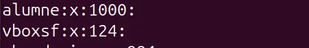

SPRINT 2
Gestió de la Informació del Sistema i Administració
La gestió de la informació i administració del sistema fa referencia principalment a Gestió de Usuaris i els permisos d’aquests, incluint també la gestió dels permisos d’arxius i els processos en general del sistema operatiu.
Gestió d’Usuaris i Grups.
Explicació Usuaris i Grups
El primer sera explicar que són i per a que serveixen els usuaris i grups en un sistema operatiu detalladament.
Els usuaris realment son comptes d’usuari que serveixen per poder autentificarse a un sistema operatiu i poder fer ús de tot lo que el sistema operatiu ofereix, limitat per el tipo d’usuari que es el que ha iniciat sessió. Un usuari pot
Els grups en canvi son entitats mes grans que contenen varios usuaris, per tal de poder gestionarlos tots a la vegada en compte de tenir que anar un per un, usualment comparteixen recursos i permisos.
Tipus d’usuaris
En un sistema operatiu es poden trobar varios tipus d’usuaris, concretament tenim 3
- Usuari normal: aquests usuaris són usuaris normalment sense permisos d’administrador que estan limitats, es a dir no poden executar tasques d’administrador.
- Usuari administrador o especial: aquests usuaris són iguals que els normals pero aquests tenen permisos d’administrador (sudo) per tant poder fer qualsevol tipo de tasca en el sistema operatiu.
- Usuaris del sistema: creats basicament per programes externs per poder fer tasques que demana aquest programa.
Tipus de grups
Podem diferenciar tipus de grups
- Grups primaris: els grups primaris són el grup al que pertany un usuari al ser creat, es a dir se crea automaticament
- Grups secundaris: altres grups creats per fer copmartir als usuaris fitxers o permisos.
Arxius per la gestió d’usuaris i grups
Per començar parlarem dels arxius principals on es guarda tota la informació dels usuaris i grups
etc/passwd
En aquest arxiu es on es guarda tota la informació del usuaris i tots els usuaris que tenim al sistema, sempre segueixen la mateixa estructura, que es la següent
nom_usuari:x:UID:GID:comentari:directori_personal:intèrpret
root@alumne-VirtualBox:/home/alumne# cat /etc/passwd

Per tant tenint en compte el exemple de la estructura dels usuaris en aquest arxiu esta format per les següents parts, la UID (Identificador del usuari), el GID (Identificador del grup), la X que significa que la password esta encriptada y is pot veure a un arxiu, i per últim el directori, que en aquest cas es /home/alumne, en resumen en aquest arxiu podem veure el UID i el GID
etc/shadow
L’arxiu shadow es on s’almacenen totes les dades de les contrasenyes dels usuaris i la expiració d’aquesta
root@alumne-VirtualBox:/home/alumne# cat /etc/shadow

En la captura anterior es pot veure totes les xifres de la contrasenya encriptada en aquest cas de alumne i la seva data de expiració, el avis i el bloqueig
20047:0:99999:7:::
etc/group
Dins del arxiu group podem veure dades respecte al grup que pertany cada usuari
root@alumne-VirtualBox:/home/alumne# cat /etc/group

La estructura del etc/group es igual que la dels altres, la X ens indica si hi ha alguna contrasenya encriptada, i el numero ens indica el GID del grup al que pertany l’usuari.
etc/gshadow
Per útlim l’arxiu gshadow ens guardara les dades de les contrasenyes dels groups i els seus administradors.
root@alumne-VirtualBox:/home/alumne# cat /etc/gshadow
Per exemple es pot veure com no perteneixen a ningún grup aquests 2 usuaris i no tenen contrasenya encriptada

Creació i Configuració usuaris
Afegir un usuari es molt sencill, la comanda mes basica es la següent, aquesta comanda no ens preguntara per ningun requeriment.
sudo useradd

Com es pot veure a la captura anterior el sistema no ens demana ninguna contrasenya, per tant per poder afegir una contrasenya al usuari tenim la següent comanda
sudo passwd deix
Aquesta contrasenya requereix 8 caracters minims i uns requisits de dificultat, es a dir no es pot ficar una contrasenya que es 12345678 ja que ho denegara.

Aquestes dos comandes eren la forma sencilla de crear un nou usuari amb o sense contrasenya, pero també es pot fer de forma mes detallada automaticament.
sudo adduser persona
En aquest cas ens preguntara descripcions mes uniques i especifiques per cada usuari, també ens indicara el seu UID I GID que en aquest cas es 1011 i 1011.

Aquest usuari que hem creat actualment no te un directori principal per tant el tenim que crear manualment de la següent forma
sudo mkdir /home/deix | sudo chown deix:deix /home/deix | sudo usermod -d /home/deix

Un cop fets aquest pasos podem intentar iniciar sessió i comprovar si estem al directori que li hem assignat a l’usuari.
Creació i Configuració Grups
La comanda mes bàsica per crear un grup autocràticament i molt ràpidament es la següent,
aquesta comanda asignara un GID al nou grup que hem creat per poder gestionarlo posteriorment
sudo addgroup deixes

Si volem establir un administrador per al nostre grup podem fer anar aquesta comanda
sudo usermod -aG deixes [usuari]

Un altre mètode per afegir un administrador al grup es amb el gpasswd
sudo gpasswd -a deix deixes

Podem eliminar al usuari que hem afegit anteriorment amb un deluser
sudo deluser deix [grup]

Es pot afegir una contrasenya al nostre grup amb la comanda gpasswd

Per últim podem eliminar el grup.

Eliminar i bloquejar usuaris
Hem vist com crear els usuaris pero pot ser també necessitem eliminar-los o bloquejar-los, per tant la comanda mes basica i mes simple per borrar un usuari es la següent, també es pot fer deluser -r per eliminar el seu directori.
sudo deluser deix | sudo deluser -r

Per bloquejar un usuari podem fer anar la següent comanda, aquesta comanda el bloquejara indefinidament
sudo usermod -L deix

Si volem desbloquejar a aquest usuari podem fer el següent
sudo usermod -U deix
Pero el desbloqueig deixa a l’usuari sense contrasenya per tant amb la comanda usermod -p assignem una de nova


Gestió de permisos
En linux tot de uns permisos que es poden fer utilitzar per privar a usuaris de fer certes accións o poder donar mes access a altres.
Els permisos es divideixen principlament en 3 blocs que tenen el mateix patro.
- user: rwx
- group: rwx
- others: rwx
Resultant aixo amb aquesta forma -rwx-wxrwx
Cada una de les lletres representa el següent significat
- R: Permisos de lectura
- W: Permisos de escriuta
- X: Permisos de execució
Les dos comandes que tenim per poder gestionar aquests permisos son els següents
Un d’aquests es el chmod, aquesta comanda ens permetra modificar els blocs que he explicat anteriorment.
Per provar aixo creare un arxiu .txt

A aquest arxiu .txt li podem donar tots els permisos del 3 grups, per exemple. Aquests permisos es poden donar en símbols i en binari com es pot veure a la captura.
sudo chmod 777 hola.txt

UMASK
Amb la comanda UMASK podem configurar els permisos dels nous arxius que crearem predeterminadament, per exemple:
sudo umask 022

ACL
Podem comporovar els permisos amb la següent comanda

Si volem proporcionar permisos amb les comandes ACLs podem fer la següent comanda:

Com es pot veure a la captura s’han actualitzat els permisos

Si volem eliminar la ACL que hem ficat a algún usuari podem utilitzar la següent comanda
setfacl -x u:deix hola.txt

Sistemes de fitxers
Els sistemes de fitxers son estructures que organitzen i gestionen la informació emmagatzemada en qualsevol tipus de disco, hi han 2 sistemes de fitxers molt comuns i que mes es fan anar.
Els sistemes de fitxer NTFS van ser desenvolupats per Microsoft i son utilitzats a Windows, aquest sistema de fitxers de una capacitat de fitxers de 16TiB i volums de 256TiB com a capacitat maxima.
Aquest es el sistema de fitxers predeterminat de Linux, admet fitxers de fins a 16 TiB i sistemes de fitxers de fins a 1 EiB.
Particions
Si volem crear una partició al nostre disc fem us de la comanda fdisk

Despres assignarem el sistema de fitxers ext4 en aquest cas de la següent forma
mkfs.ext4 [ruta del disc] | mkfs.ntfs [ruta del disc]

Per últim podem verificar la mida del bloc amb la següent comanda
sudo tune2fs -l /dev/sdb1 | grep Block

I podme muntar la nova partició a un directori.